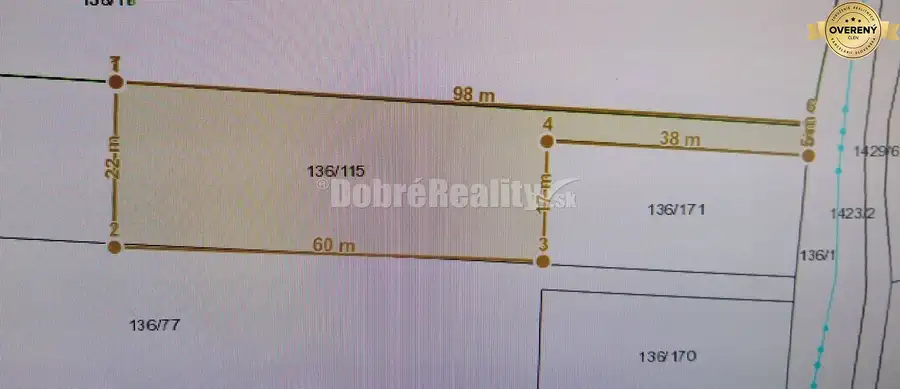
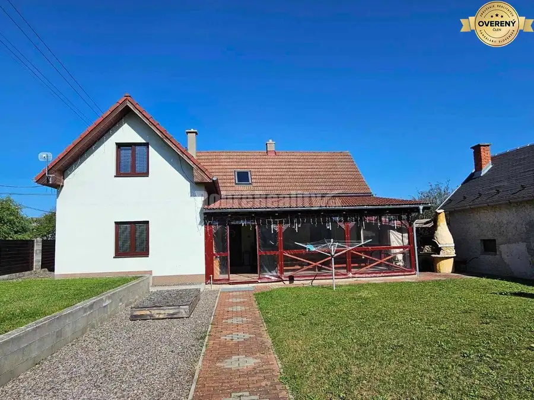
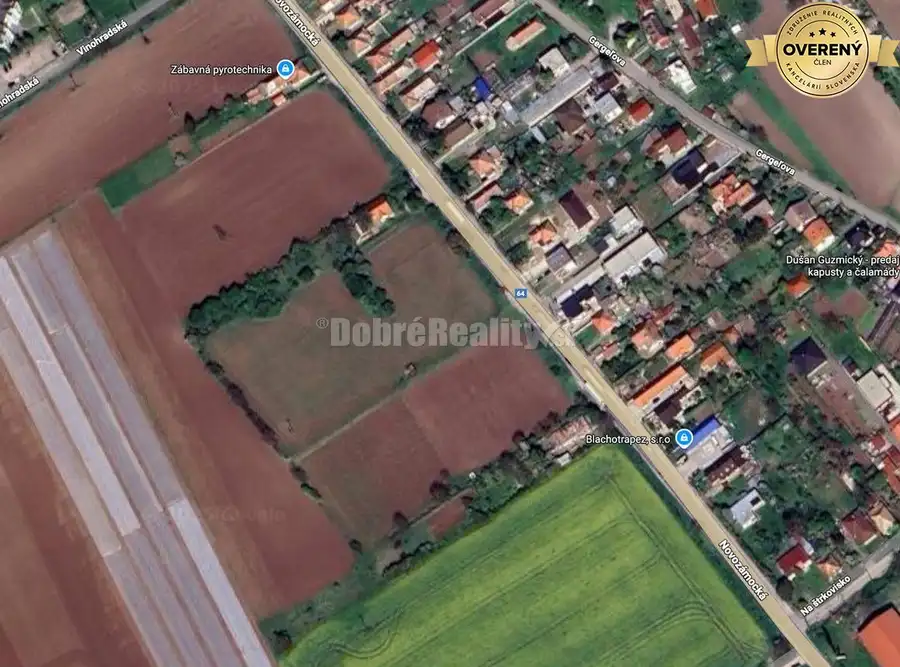

RD v Dolných Krškanoch s veľkou záhradou - 919m2
Nitra
- Dispozícia2-izbový
- Plocha76 m²
- Poschodie0. z 1
- Stavpôvodný
- Vlastníctvoosobné
O nehnuteľnosti
Hľadáte nehnuteľnosť s veľkým potenciálom, veľkým pozemkom a výborným napojením na mesto?
Ponúkame na predaj samostatne stojaci rodinný dom v tichej a dostupnej lokalite Nitra – Dolné Krškany. Dom je v udržiavanom, dobrom stave, ideálny na modernizáciu podľa vlastných predstáv.
ZÁKLADNÉ PARAMETRE NEHNUTEĽNOSTI: Plocha pozemku: 919 m² (priestorný, slnečný pozemok s množstvom možností) aj s možnosťou rozdelenia na dve samostatné parcely.
Zastavaná plocha: 84 m²
Úžitková plocha: 76 m²
Dispozícia:
3 obytné izby + príslušenstvo (1. NP)Tvar domu: Štvorcový pôdorys (funkčné a praktické usporiadanie)Rok kolaudácie: 1961 (poctivá stavba v dobrom technickom stave) STAVEBNO-TECHNICKÝ STAV A MATERIÁLY: Murivo: Plynosilikátové tvárnice (hrúbka 300 mm) + priečky z pálených tehál Základy: Betónové s hydroizoláciou proti vlhkosti Strecha: Valbová/stanová strecha s krytinou z pálenej škridly Okná: Pôvodné drevené doplnené o nové vonkajšie plastové rolety (obytné izby a kuchyňa)Životnosť stavby: Kvalitná konštrukcia s predpokladanou životnosťou min. 100 rokov DISPOZIČNÉ RIEŠENIE (1. NP):Vstupná predsieň Chodba 2 samostatné obytné izby Kuchyňa Kúpeľňa spojená s WC Komora s výlezom na povalu (možnosť využitia ako úložný priestor)
INŽINIERSKE SIETE (IS):Dom je napojený na všetky kompletné inžinierske siete: Elektrika: Vzdušná prípojka, elektromer umiestnený na fasáde Voda: Verejný vodovod (vodomerná šachta)Plyn: Plynomer na hranici pozemku v predzáhradke Kanalizácia: Dom je napojený priamo na verejnú kanalizáciu. Na pozemku vlastná vrtaná studňa
HLAVNÉ VÝHODY NEHNUTEĽNOSTI: Veľký pozemok (919 m²): Dostatok miesta pre záhradu, bazén, altánok, garáž či rozšírenie/prístavbu domu. Všetky IS na pozemku / napojené: Bez nutnosti riešiť žumpu či vlastnú studňu. Zdravá stavba: Suchý a stabilný dom z plynosilikátu a tehly s dobrým technickým základom. Skvelá dostupnosť: Rýchly prístup do centra Nitry aj na obchvat / diaľnicu R1. LOKALITA: Mestská časť Nitra - Krškany ponúka pokojné bývanie rodinného typu s kompletným mestským zázemím v blízkom dosahu (MHD, obchody, škola, škôlka, rýchle napojenie do centra Nitry). CENA 168.000,-€ (vrátane provízie a právneho servisu)
Pre viac informácií alebo dohodnutie termínu obhliadky ma neváhajte kontaktovať: Telefón:
DOBRÉ REALITY – Sme spoľahlivá realitná spoločnosť a líder v oblasti realitných služieb.
Viac ako 15 rokov nám dôverujú tisícky klientov po celom Slovensku.
Pomôžeme Vám najvýhodnejšie predať, kúpiť alebo prenajať nehnuteľnosť.
DOBRÉ REALITY sú členom Združenia realitných kancelárií Slovenska (ZRKS) a Realitnej únie SR.
Parametre
| Rozloha pozemku | 919 m² |
|---|---|
| Zastavaná plocha | 84 m² |
| Úžitková plocha | 76 m² |
| Poschodie | prízemie |
| Počet poschodí | 1 |
| Počet izieb | 2 |
| Vlastníctvo | osobné |
| Stav | pôvodný |
| Odvoz odpadu | áno |
| Voda | studňa a vodovod |
| El. napätie | 230V |
| Plyn | áno |
| Kanalizácia | áno |
| Kúpeľňa | vaňa |
| Vykurovanie | vlastné - plyn |
| Balkón | nie |
| Lódžia | nie |
| Pivnica | nie |
| Garáž | nie |
| Parkovanie | vonkajšie |
| Inžinierske siete | áno |
| Postavené z | Zmiešané |
| Zariadenie | nezariadený |
| Zateplený objekt | nie |
| Strecha | pôvodná |
| Krb | nie |
| Klimatizácia | nie |
| Energetický certifikát | nie |
| Predzáhradka | áno |
| Bezbariérový prístup | nie |
| Okná | drevené |
| Terén | rovina |
| Prístupová cesta | asfaltová cesta |
| Dátum zverejnenia | 1. 9. 2026 |
Kde to je
Mohlo by Vás zaujímať

Pozemok4 72 177 €Pozemok v Sokolovciach pod lesom 1473m2 – tiché prostredie - vyjadreni Sokolovce 1473 m² V zastúpení vlastníkov, EXKLUZÍVNE ponúkame na predaj pozemok o výmere 1473m2 (š.22x60 s príst.cestou 5 x 38m), v obci Sokolovce, len 5 min. od…
Rodinné domy10 179 900 €Exkluzívne u nás! RD/chalupa v obci Malá Lehota Malá Lehota 5-izbový166 m² RK Dobré Reality, ponúka na predaj očarujúcu nehnuteľnosť v obci Malá Lehota, ktorá spája pokoj vidieka s komfortom moderného bývania. Nachádza sa…
Pozemok6 53 900 €Stavebný pozemok na predaj – Ivanka pri Nitre (537 m²) | MHD, IS, rovi Ivanka pri Nitre 537 m² Ponúkame na predaj slnečný stavebný pozemok o výmere 537 m² (šírka 10 m x dĺžka 54 m), nachádzajúci sa v obľúbenej a dynamicky sa rozvíjajúcej obci…